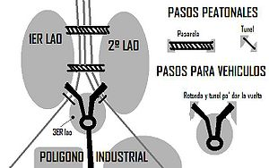
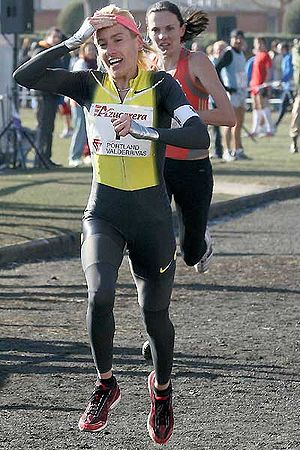

Venta de Baños
 De: La Frikipedia, la enciclopedia extremadamente seria.
De: La Frikipedia, la enciclopedia extremadamente seria.
| De la serie ciudades del mundo:
|
| Venta de Baños
|
| {{{bandera}}}
|
{{{escudo}}}
|
| (Bandera)
|
(Escudo de armas)
|
|
| Topónimo oficial
|
Venta de Baños
|
| País
|
España
|
| Código postal
|
34200
|
| Superficie
|
14.25 Km2
|
| Altitud
|
723 msnm
|
| Distancia
|
{{{distancia}}}
|
| Fundación
|
1860
|
| Población
|
6437 (2009)
|
| Gentilicio
|
Venteños. ventadebañenses
|
| Alcalde
|
Consolación Pablos, quien se gasta todo el dinero en fiestas en vez de arreglar el pueblo un poco, como no hay cabeza en este ayuntamiento...
|
Venta de Baños
Historia y Fundación
El pueblo en realidad es una extensión de un pueblo al que se le puso el ferrocarril muy lejos y la gente empezó a ponerse al lado de las vias. El pueblo raiz se llamaba Baños . La gente, empezó a ponerse al lado de las vias para estar mejor comunicados y para no pegarse una buena caminata hasta Baños. Había una venta (una posada) al lado de las vias y claro, alguien muy ingenioso vio que se estaban haciendo un montonazo de casas y que iban a superar la extensión de Baños y entonces decidió que eso iba a ser un pueblo y lo llamó Venta de Baños. Ese ingenioso señor fué nombrado mandamás del pueblo hasta que le dió un derrame a los 2 dias por pensar mucho el nombre del pueblo.
Descripción del pueblo
Venta de Baños carece de centro en sí, aunque en realidad el centro son las vias,como ya dijimos antes las vias fueron antes que el pueblo
Empecemos con el primer lado, el de la estación:
El Primer Lado, el de la estación
 para no perderse en el pueblo.
Vamos a resumir los puntos de interes:
- Estación de Trenes: Está situada en la Avenida de la Estación (como debe ser). Aquí trabaja un tercio del pueblo. Su trabajo es anunciar los trenes a los viajeros . Este sitio fue el que dió vidilla al pueblo y hasta hace 50 años fue la principal estación de España (No es coña aunque lo parezca).
- El sandoval: un bar cuyo propietario nunca cierra, está abierto 24h/365dias al año... cuando quieras mamarte, sea la hora que sea, se puede ir libremente que nunca lo encontraras cerrado. Por las tardes suele estar lleno de jubilados jugando al julepe y dandole al chinchón, y por la noche lleno de borrachos.
- Ayuntamiento: Aquí trabaja la alcaldesa (Se llama Chelo y es del PSOE, (el partido de los socialistos), no miento)(y yo tampoco)
- Las piscinas: En este aburrido recinto, es donde pasas el verano y donde puedes ver a toda la gente del pueblo. Aqui solia venir Paulo Martinho a hacer unos trompos bien guapos [1] cuando viene la concentración motera, que da dinero al pueblo.
- Centros de estudio: Estaban las escuelas, que ahora no se que serán, el C.P. Angel Avia y al lado el IES Reesvinto, que por lo que me han dicho, es dificil . Había un instituto que ahora está abandonado y no lo quieren tirar, ademas en el patio vienen conciertos en fiestas como el de Carlos Baute [2].
El segudo lado, el del SanGar
Este lado es algo mas grande.
- SanGar: Hotel-Bar-Restaurante-Discoteca-etc que al menos tiene conexión a Internet.
- El rosu o rosumar: discoteca que lleva abierta unos 40años que solo abre los sabados por la noche y hasta las 5 d la mañana no se llena de gente joven, antes de esa hora solo hay solterones intentando piyar cacho, si quieres cogerte una buena, puedes pedir cualquier cubata de los que ponen.
- Azucarera: Antigua fábrica de azúcar cerrada en 1998 porque daba cancer. Ahora la han demolido porque los de la familia del SanGar lo querian para hacer una urbanización pero como hay crisis han abandonado el proyecto de la friolera de 1000 chalets, ¡Y DE LUJO! y ahora eso es un descampado. Antes de ser demolida era centro de ocio de jovenes mangantes que cuando se aburrian iban alli a romper cristales o a tirar cosas desde arriba del silo, aparte de que los jais se llevaban la chatarra.
- Centros de estudio: está el C.P Sagrado Corazón, el C.P
Largos Argos, y el IES Sagrado Corazón, también conocido como los reparadores, los repa o los reparapijos. Este último es donde vienen todos los internos que son pijos y fachas (cerditos), aparte de unos gamberros y maricones, desde casi toda España y los muy capullos les quitan las chavalitas a los chicos.
El lado del medio, Entrevias
En este lado vive la alcaldesa. Este lado es el mas pequeño, pero del que mas podemos hablar. Puntos de interes:
- Centro Cultural o centro juvenil: Es una biblioteca y salón de actos. Aqui puedes conectarte a internet durante media hora. Se llama juvenil pero que no se le ocurra a ningun joven proponer ideas para actividades porque no será escuchado .
- Gasolinera: Pues eso, la gasolinera del pueblo, con hotel y apartahotel y tanatorio.
- La Venta: La primera casa del pueblo, ahora solo queda una tapia y está habitada por los jais.
- La Siro: fábrica de galletas que las vende hacendado donde trabaja el último tercio del pueblo. Tendría que estar en el polígono pero está mas cerca de este lado.
- El kiosko de nino: este local está abierto practicamente las 24horas del día y en el te puedes encontrar a un dependiente que te venderá las gominolas duras y caducadas a unos precios de escándalo.
- Los tubos: lugar donde hacer botellón.
El polígono
Aquí hay bastantes fábricas aunque no trabaja tanta gente como en la Siro, la estación o la droga, algunos ejemplos:
- Dora
- El tanatorio (hay otro en el lado del medio)
- Pastas Ardilla
- Almacenes de la Siro
- Prosol (café)
- Puerto seco: Que es donde vienen los Seat desde la fábrica de Barcelona y los llevan a los concesionarios.
- PalPan
Y muchisisimas mas.
- Nota 1: El buscador de empresas del polígono está escacharrado y no busca bien las empresas.
- Nota 2: Todas las calles del polígono tienen nombre de tren.
Personajes famosos de Venta de Baños
- Marta Dominguez: Atleta palentina que entrenaba en Venta de Baños.
Cosas del pueblo
 Marta
Domingas Dominguez en el cross.
- Baños es un barrio del pueblo.
- Hay mucha buena gente.
- Mi profesor de matemáticas se perdió al venir por primera vez aquí.
- No me extraña, con tanta via.
- Es un buen de pueblo.
- Todavía queda un Lada Samara.
- Existe el "Tren del Camino de Santiago" que hace viajes culturales.
- Su estación fue la mas importante de España
- Ya no lo es.
- Dicha estación tiene el andén mas largo de Europa.
- Aquí entrenaba Marta Domínguez.
- Tiene equipo de futbol.
- Está en regional.
- Les metieron una goleada allá por los 70 de 17-3.
- Baños tiene una Basilica Visigotica del siglo VIII.
- Las gaseosas La Adelina se hacian en Baños.
- En la película de Sor Citroën hacen mención a la estación.
- En 1931, durante el exilio de Alfonso XIII con su esposa Victoria Eugenia de Battenberg los reyes salientes pararon durante unas horas en la localidad, esperando poder seguir su camino a Francia.
- En la comedia teatral de Lina Morgan Vaya par de gemelas (1981) es una localidad recurrente como referente espacial.
- El abuelo de Médico de Familia fue ferroviario, y comenta en la serie, que estuvo trabajando en Venta de Baños.
- En Saber y Ganar (programa televisivo de la cadena publica española La 2) han preguntado varias veces sobre este municipio.
- Van a derruir medio pueblo para que pase el AVE, todavia se duda de si toda esta molestia servirá para que el tren pare en el pueblo.
Ahora en serio, fuera coñas
Venta de Baños es un buen pueblo. Está bien organizado y se le conoce, aparte de por las vias, por su buena gente. En resumen, te aconsejaria vivir aquí. ME ENCANTA MI PUEBLO!!!!!!!
Frikipedia 2005-2016, Licencia
GFDL 1.2 - Extraído por FrikiLeaks